Extras: Discrete Pole Locations and Transient Response
Contents
In this page we are going to explain in more detail how the pole locations of a discrete-time transfer function relate to the corresponding time response.
Small damping (zeta = 0.1, Wn = (4 pi)/(5 T))
First let's consider the following discrete transfer function.
(1)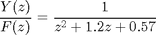
The following commands will determine and plot the poles of this transfer function. Enter the following commands to a new m-file and run it in the MATLAB command window. You should see the pole-zero map shown below.
T = .05;
z = tf('z',T);
sys = 1/(z^2+1.2*z+0.57);
[poles,zeros] = pzmap(sys)
pzmap(sys)
axis([-1 1 -1 1])
zgrid
poles = -0.6000 + 0.4583i -0.6000 - 0.4583i zeros = Empty matrix: 0-by-1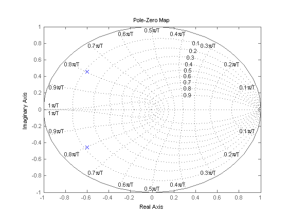
From this figure, we see that poles are located such that they have a natural frequency of (0.8 pi)/ T rad/sample or (4 pi)/(5 T) rad/sample (where T is the sampling time in sample/sec) and a damping ratio of approximately 0.1. Assuming that we have a sampling time of 1/20 sec/sample and using the three equations shown below,
(2)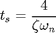
(3)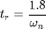
(4)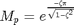
we can determine that this system should approximately have a rise time of 0.035 sec, a settling time of 0.8 sec, and a maximum overshoot of 70%. When you use these equations, you must convert the natural frequency (Wn) from rad/sample to rad/sec. Also, these relationships are most valid for underdamped 2nd order system with no zeros. Let's confirm these results by obtaining the system's step response. Add the following commands to the above m-file and rerun it in the MATLAB command window. You should see the following step response.
[x,t] = step(sys,2.5); stairs(t,x)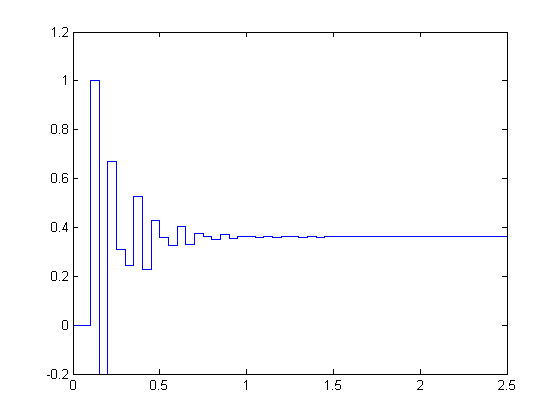
The plot shows that the rise time, the settling time, and the overshoot are approximately as expected.
Medium damping (zeta = 0.4, Wn = (11 pi)/(20 T))
Now consider the next discrete transfer function.
(5)
Let's follow the same steps as what we did above. Create a new m-file and enter the following commands. Running this m-file in the command window gives you the following pole map.
T = .05;
z = tf('z',T);
sys = 1/(z^2 + 0.25);
[poles,zeros] = pzmap(sys)
pzmap(sys)
axis([-1 1 -1 1])
zgrid
poles =
0 + 0.5000i
0 - 0.5000i
zeros =
Empty matrix: 0-by-1
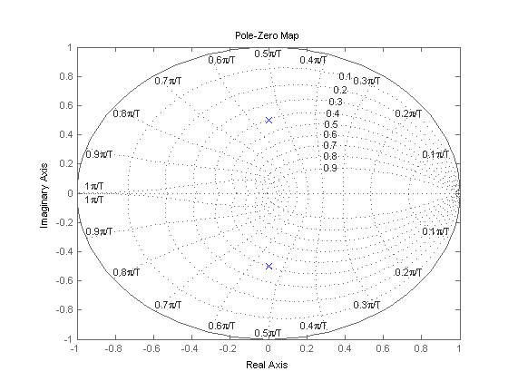 From this pole map, we see that poles are located at a natural frequency of (11 pi)/(20 T) rad/sample and a damping ratio of approximately 0.4. Assuming a sampling time of 1/20 sec as before and using the above three equations, we can determine that the step response should approximately have a rise time of 0.05 sec, a settling time of 0.3 sec, and a maximum overshoot of 25%. Let's obtain the step response and see if these are correct. Add the following commands to the above m-file and rerun it. You should see the following step response.
[x,t] = step(sys,2.5); stairs(t,x)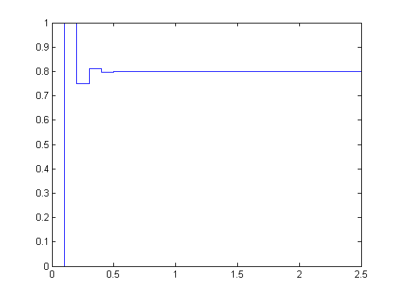
Once again, this step response shows the rise time, settling time and overshoot that we approximately expected.
Large damping (zeta = 0.8, Wn = pi /(4 T))
For the last example, let's consider the following discrete-time transfer function.
(6)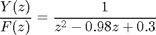
Just as before, enter the following commands to a new m-file and run it in the MATLAB command window. You should see the following pole-zero map.
T = .05;
z = tf('z',T);
sys = 1/(z^2 - 0.98*z + 0.3);
[poles,zeros] = pzmap(sys)
pzmap(sys)
axis([-1 1 -1 1])
zgrid
poles = 0.4900 + 0.2447i 0.4900 - 0.2447i zeros = Empty matrix: 0-by-1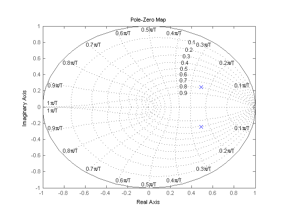
From this plot, we see that the poles are located at a natural frequency of pi /(4 T) rad/sample and a damping ratio of approximately 0.8. Once again assuming a sampling time of 1/20 sec, we can determine that this system should approximately have a rise time of 0.1 sec, a settling time of 0.3 sec and an overshoot of 1%. Let's confirm this by adding the following commands to the above m-file and rerunning it. You should see the following step response.
[x,t] = step(sys,2.5); stairs(t,x)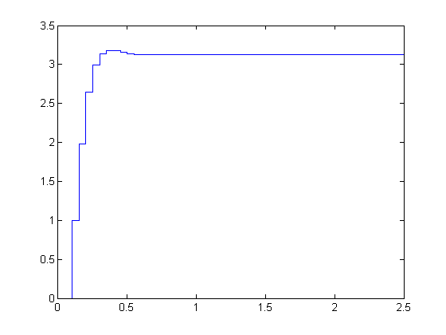
The resulting step response again has roughly the shape predicted.
Using these three examples, we proved that the pole locations can be used to get a rough estimate of the transient response of a system. This analysis is particularly useful in the root-locus design method where you attempt to place the closed-loop poles to obtain a satisfactory response.